O problema
As cobranças de laudos periciais chegam à POLITEC com dados essenciais dispersos em e-mails e anexos diversos, exigindo uma triagem manual morosa e arriscada quanto ao sigilo de informações sensíveis.
Recebimento da Requisição: O coordenador acessa a caixa de e-mails institucional da POLITEC e abre a mensagem enviada pelo Ministério Público, Delegacia ou Poder Judiciário; Download e Abertura Manual de Anexos: O coordenador faz o download e abre individualmente cada arquivo anexado (ofícios em PDF, cópias de inquéritos, despachos e termos de apreensão); Leitura e Varredura Visual: A pessoa lê o corpo do e-mail e navega pelas páginas dos anexos buscando manualmente os campos essenciais (número do ofício/cobrança, data, protocolo, tipo de crime, regional de destino, se há Amostra de Referência e qual é o objetivo exato da perícia); Digitação e Consolidação na Planilha: Os dados localizados são digitados um a um nos campos correspondentes de uma planilha de controle; Tratamento de Pendências e Encaminhamento: Se alguma informação crítica estiver ausente ou confusa no e-mail, o servidor precisa redigir uma resposta solicitando complementação; caso esteja tudo correto, realiza o direcionamento do pedido para o setor de custódia para posterior processamento.
Dimensão: Tempo; Impacto Atual (Estimativa Operacional): 12 a 15 minutos dedicados por e-mail/requisição recebida; Evidência / Métrica do Número: Medição de tempo médio de ciclo: abertura do e-mail, download e varredura de 3 a 5 anexos em PDF, localização visual dos 8 campos e cópia/digitação na planilha. Em um volume de 40 e-mails/dia, representa 8 a 10 horas/dia de trabalho manual contínuo. Dimensão: Custo; Impacto Atual (Estimativa Operacional): R$ 6.000 a R$ 10.000/mês por regional em horas-homem pagas para digitação; Evidência / Métrica do Número: Custo/hora médio do servidor público alocado × ~160 a 200 horas mensais consumidas exclusivamente com triagem administrativa em vez de atividades periciais de ponta. Dimensão: Qualidade; Impacto Atual (Estimativa Operacional): 8% a 15% de erro de transcrição ou omissão de dados; Evidência / Métrica do Número: Taxa padrão de erro humano em entrada manual de dados não estruturados (troca de dígitos em protocolos, erro no tipo de crime ou não marcação da existência de Amostra de Referência - AR). Dimensão: Risco; Impacto Atual (Estimativa Operacional): Alto risco legal e de conformidade (LGPD/Sigilo); Evidência / Métrica do Número: 1. Atravancamento processual: Perda de prazos judiciais por erro na identificação do nível de urgência ou regional incorreta; 2. Vazamento de dados: Manuseio manual recorrente de arquivos contendo dados sensíveis de inquéritos e segredos de justiça. Dimensão: Retrabalho; Impacto Atual (Estimativa Operacional): 15% a 20% do volume precisa ser reanalisado ou corrigido posteriormente; Evidência / Métrica do Número: Amostra de chamados e e-mails de acompanhamento enviados pelo MP/Delegacias para corrigir dados cadastrados errados, solicitar reenvio de laudos ou reencaminhar peças para a regional correta.
AS-IS · o processo antes do MVP
O caminho real, com quem faz, o que entra, onde espera e o que é automatizável. Fonte: tabela AS-IS do projeto.

Fluxograma AS-IS · amarelo: etapa manual; tracejado: ponto de espera. Os números correspondem à tabela. Fonte Mermaid.
| Etapa | Quem faz | Entra | Ação | Sai | Sistema | Regra | Onde espera | Tempo | Automatizável |
|---|---|---|---|---|---|---|---|---|---|
| Chegada do e-mail de requisição | Autoridade Requisitante (MP/PC/Poder Judiciário) | Minuta do e-mail + Ofício/Anexos em PDF | Envio de e-mail institucional com solicitação de laudo pericial para a POLITEC | E-mail recebido na caixa de entrada institucional | Servidor de E-mail | N/A (Ato externo da autoridade) | Fila de e-mails não lidos na caixa de entrada | 0,00 | Não |
| Triagem inicial e abertura do e-mail | Servidor / Triador da POLITEC | E-mail na caixa de entrada | Servidor identifica o e-mail não lido, abre a mensagem e faz a leitura preliminar do assunto e corpo | E-mail aberto no monitor | Webmail / Leitor de E-mail | Priorização visual por ordem de chegada ou urgência indicada | Caixa de entrada (aguardando tempo do servidor para abrir) | 0,50 a 4,00 | Sim, com regra clara |
| Download e leitura dos anexos | Servidor / Triador da POLITEC | Anexos em PDF / Imagens (Ofícios, Inquéritos, BOs) | Baixar todos os anexos, abrir arquivo por arquivo e realizar varredura visual em busca dos dados chaves | Anexos abertos e dados localizados na tela | Leitor de PDF / Sistema de Arquivos local | Verificar se os anexos estão legíveis, completos e se pertencem ao processo | Pasta de downloads / Leitura manual de múltiplas páginas em PDF | 0,10 a 0,25 | Sim, com regra clara |
| Mapeamento dos 8 campos essenciais | Servidor / Triador da POLITEC | Texto do e-mail e conteúdo dos PDFs abertos | Localizar e conferir visualmente: Data, Nº Cobrança, Nível, Crime, Protocolo, AR, Objetivo e Regional | 8 variáveis identificadas mentalmente pelo servidor | Anotação manual / Memória | Regra de negócio: confirmar se a requisição tem todos os dados obrigatórios para autuação | Navegação visual entre corpo do e-mail e múltiplos PDFs | 0,10 a 0,15 | Sim, com regra clara |
| Digitação e consolidação na planilha | Servidor / Triador da POLITEC | 8 campos mapeados + Planilha de controle aberta | Copiar/digitar os dados identificados no e-mail/PDFs para a linha correspondente na planilha | Linha da planilha preenchida manualmente | Excel / Google Sheets / LibreOffice | Padronização dos nomes de regional, tipos de crime e formatos de data | Mão de obra / Digitação manual campo a campo (risco de erro humano) | 0,05 a 0,10 | Sim, com regra clara |
| Download, renomeação e organização dos PDFs | Servidor / Triador da POLITEC | PDFs baixados sem padrão de nome | Renomear o arquivo PDF no padrão da instituição (ex: Protocolo + Regional) e mover para a pasta correta | Arquivo PDF renomeado e salvo na pasta institucional | Gerenciador de Arquivos do S.O. | Padronização da nomenclatura dos arquivos | Operação manual de "Salvar Como", renomear e mover arquivos | 0,05 a 0,10 | Sim, com regra clara |
| Validação, aceite e encaminhamento legal | Servidor / Triador da POLITEC | Linha da planilha preenchida + Anexos salvos | Conferir os dados inseridos, validar aceite da requisição e assinar/encaminhar para a regional responsável | Requisição oficializada e atribuída ao setor pericial | Planilha + Sistema Interno de Tramitação | Fé pública: confirmar validade do ofício, cadeia de custódia e ausência de impedimento legal | Mesa do servidor (Aguardando análise e decisão humana) | 0,20 a 1,00 | Não |
TO-BE · o processo com o MVP
O que muda em cada etapa, quem passa a fazer e o ganho esperado. Fonte: tabela TO-BE do projeto.

Fluxograma TO-BE · verde: máquina (automação local); azul: pessoa (fé pública). Fonte Mermaid.
O processo de triagem da POLITEC passa a ser executado por um script local que faz a varredura automática de e-mails e anexos, extrai e organiza os 8 campos essenciais na planilha sem expor dados a IAs externas, restando ao servidor apenas a validação rápida e o aceite final das requisições periciais.
- Monitoramento e varredura da caixa de e-mails
Substitui a checagem manual periódica por varredura automatizada continua/programada.
A máquina (automação)Eliminação do tempo de espera na caixa de entrada e início imediato do processamento. - Extração de texto e leitura dos anexos (PDF/Imagens)
A leitura visual de múltiplos anexos é substituída pela extração via código e OCR local.
A máquina (automação)Redução drasticamente do tempo de leitura (de minutos para segundos por arquivo). - Mapeamento dos 8 campos essenciais
A busca visual no texto é feita por regras de regex/parsing local, identificando as 8 variáveis.
A máquina (automação)Padronização e eliminação de omissões ou erros de transcrição manual. - Preenchimento da planilha e sinalização de alertas
Inserção automática da linha populada com dados e atribuição de flags em inconsistências.
A máquina (automação)Fim da digitação manual ("copiar e colar") e identificação visual instantânea de erros. - Salvamento, renomeação e organização dos arquivos
PDFs baixados são automaticamente renomeados (Padrão: Protocolo + Regional) e movidos.
A máquina (automação)Organização padronizada imediata no repositório local sem intervenção manual. - Validação de fé pública e decisão de aceite
Servidor apenas confere o pré-preenchimento na planilha e valida o aceite da requisição.
A pessoa, sem mudançaManutenção da legalidade, fé pública e segurança jurídica com consumo mínimo de tempo. - Autuação e encaminhamento para a Regional
A requisição validada é autuada e enviada ao setor/perito responsável pela emissão do laudo.
A pessoa, sem mudançaTramitação rápida e segura, pronta para o início da atividade pericial de ponta.
| Etapa | O que muda | Quem faz | Benefício | Esforço |
|---|---|---|---|---|
| Monitoramento e varredura da caixa de e-mails | Substitui a checagem manual periódica por varredura automatizada continua/programada. | A máquina (automação) | Eliminação do tempo de espera na caixa de entrada e início imediato do processamento. | Baixo |
| Extração de texto e leitura dos anexos (PDF/Imagens) | A leitura visual de múltiplos anexos é substituída pela extração via código e OCR local. | A máquina (automação) | Redução drasticamente do tempo de leitura (de minutos para segundos por arquivo). | Baixo |
| Mapeamento dos 8 campos essenciais | A busca visual no texto é feita por regras de regex/parsing local, identificando as 8 variáveis. | A máquina (automação) | Padronização e eliminação de omissões ou erros de transcrição manual. | Baixo |
| Preenchimento da planilha e sinalização de alertas | Inserção automática da linha populada com dados e atribuição de flags em inconsistências. | A máquina (automação) | Fim da digitação manual ("copiar e colar") e identificação visual instantânea de erros. | Baixo |
| Salvamento, renomeação e organização dos arquivos | PDFs baixados são automaticamente renomeados (Padrão: Protocolo + Regional) e movidos. | A máquina (automação) | Organização padronizada imediata no repositório local sem intervenção manual. | Baixo |
| Validação de fé pública e decisão de aceite | Servidor apenas confere o pré-preenchimento na planilha e valida o aceite da requisição. | A pessoa, sem mudança | Manutenção da legalidade, fé pública e segurança jurídica com consumo mínimo de tempo. | Baixo |
| Autuação e encaminhamento para a Regional | A requisição validada é autuada e enviada ao setor/perito responsável pela emissão do laudo. | A pessoa, sem mudança | Tramitação rápida e segura, pronta para o início da atividade pericial de ponta. | Baixo |
O que o MVP entrega
Tela-assinatura: A tela inicial do app..
Menu do MVP: Bancada de triagemLotesPlanilhaConfiguração
Regras de negócio
| ID | Regra | Quando | Tipo | Exceção |
|---|---|---|---|---|
RN01 | As 8 variáveis essenciais são obrigatórias para a requisição ficar pronta: DATA COBRANÇA, Nº COBRANÇAS, NÍVEL, TIPO DE CRIME, PROTOCOLO, AR PARA CONFRONTO, OBJETIVO CLARO e NOME DA REGIONAL. | Na extração e na validação | Validação | Campo ausente vira pendência e destaca a linha. |
RN02 | Divergência entre o corpo do e-mail e o anexo gera alerta DIVERGÊNCIA_DETECTADA e exige decisão humana. | Na extração | Negócio | O servidor escolhe o valor correto. |
RN03 | PDF escaneado, manuscrito ou ilegível vai para leitura manual/OCR e não é homologado automaticamente. | Na leitura do anexo | Negócio | OCR local com confiança baixa. |
RN04 | A validação final é ato humano do servidor triador, com identificação e data/hora. | Na validação | Controle | Nenhuma. |
RN05 | Termos como URGENTE, PLANTÃO e HOMICÍDIO RECENTE elevam a prioridade para alta. | Na triagem | Priorização | O servidor pode ajustar a prioridade. |
RN06 | Nenhum dado sai da estação: o processamento e a extração são locais (LGPD e segredo de justiça). | Sempre | Segurança | Nenhuma. |
RN07 | Toda validação, correção, recusa ou pendência entra na trilha de auditoria. | Em toda ação | Auditoria | Nenhuma. |
Papéis
| Papel | Quem é | O que vê | O que faz | O que não faz | Registro |
|---|---|---|---|---|---|
| Servidor Triador (Operador) | Servidor administrativo ou perito responsável pela recepção e triagem das requisições na POLITEC. | Dashboard local com a planilha de requisições pré-preenchidas pelo script, alertas de inconsistência/erro, anexos renomeados e status de cada e-mail. | Revisa os dados extraídos pela IA/script, corrige divergências, valida/autentica os 8 campos, confirma a recepção física de AR e aprova/recusa a requisição. | Alterar o código-fonte do script, modificar regras de extração local, acessar dados sigilosos fora do seu escopo de atribuição ou deletar logs de auditoria. | Confirmações de validação, edições manuais de dados, aprovações, recusas de expedientes e carimbo de data/hora (timestamp) de cada ação realizada. |
| Administrador do Sistema (TI / Dev) | Desenvolvedor do script, analista de TI ou responsável técnico pela manutenção da ferramenta local. | Logs de execução do script, taxa de sucesso na leitura de anexos, métricas de desempenho/erros de OCR, telas de configuração e regras de regex/parsing. | Mantém o script atualizado, ajusta regras de extração e OCR local, monitora a integridade das pastas/planilhas e gerencia permissões de acesso local. | Validar legalmente requisições periciais, autuar processos jurídicos, alterar o conteúdo de laudos ou atuar como validador de fé pública. | Alterações de código, modificações de parâmetros de regras, execuções de manutenção, falhas do sistema e acessos a pastas de sistema |
| Script de Automação (Agente de Sistema) | O próprio script executado localmente (sem acesso à internet) para varredura e extração de dados. | Caixas de e-mail institucionais (corpo e metadados), arquivos anexos (PDFs, imagens) e tabelas locais de referência (regionais, tipificações). | Varre a caixa de e-mails, extrai os 8 campos requeridos, renomeia e salva anexos em diretório seguro e popula a planilha local com flags de inconsistência. | Tomar decisões jurídicas/administrativas, assinar certidões, autuar laudos, enviar dados para APIs externas ou apagar e-mails originais da caixa de entrada. | Início/fim de execuções, e-mails lidos, anexos processados, taxa de confiança do OCR, erros de extração e linhas adicionadas à planilha. |
| Gestor / Chefia Pericial (Consulta) | Diretor regional, chefe de equipe ou coordenador da unidade da POLITEC. | Relatórios consolidados de desempenho, volume de requisições recebidas por regional, estatísticas de tipos de crime e tempo médio de triagem. | Acompanha indicadores da unidade, monitora gargalos na recepção de requisições e toma decisões estratégicas de redistribuição de demandas periciais | Editar dados de requisições em triagem, alterar parâmetros do script local ou aprovar cadastros técnicos pendentes de validação pelo triador. | Consultas a relatórios consolidados, exportação de estatísticas e visualizações do painel gerencial. |
Métricas do piloto
Como testar
O MVP é um `index.html` offline, com dados fictícios. Abra index.html.
cd Apps/teia-triagem-emails python construir.py python testes/testar.py python testes/cenarios.py python testes/jornada.py # Lightpanda (via WSL, CDP em 9222 e HTTP em 8000) python testes/jornada.py --cdp http://127.0.0.1:9222 --base http://127.0.0.1:8000
Documentos: PROJETO.md · sprint.md · README.md